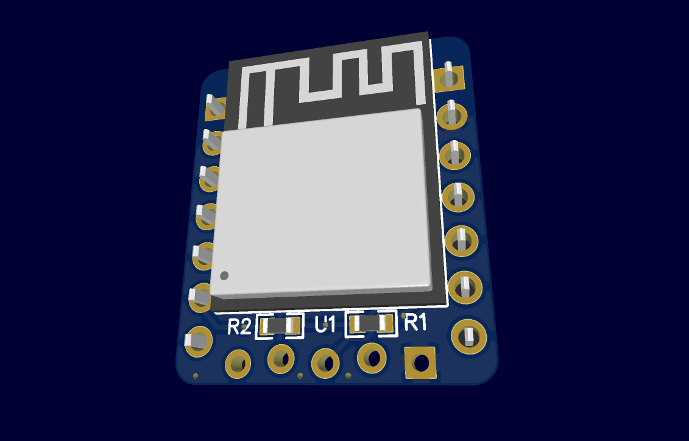
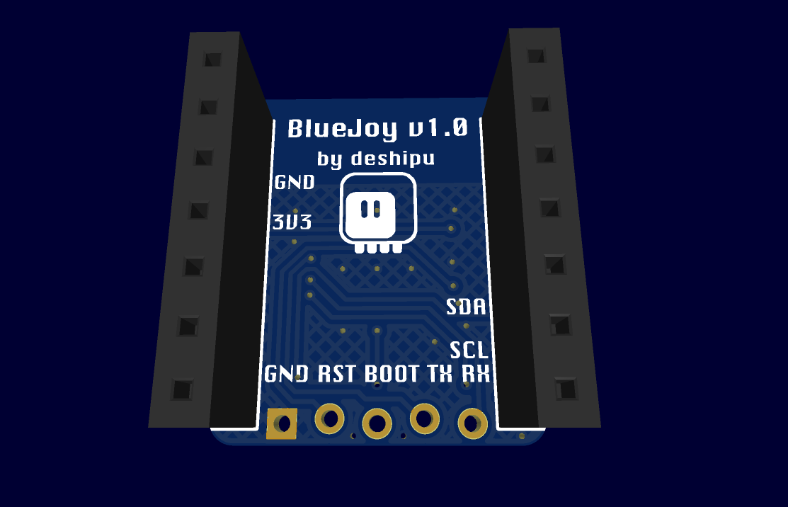

PCB Design¶
Published on 2024-10-08 in BlueJoy.
The goal of our little device is to be able to interface with bluetooth gamepads from any other microcontroller board, and any programming language. To achieve that, we are going to design a shield for the Xiao form factor, with an I2C interface, and with an ESP32 on board. Since this is going to be used as an expansion board, we don’t need a voltage regulator (we will get stable 3.3V from the parent board), USB serial connection (we will program the board once using an external serial to USB adapter), or any additional peripherals. As this is going to be an I2C module, we do want to have pull-up resistors on it, though.
However, what we do need is a properly working ESP32 chip with all its required components like crystal oscillator or flash memory, and more importantly, a properly designed and tuned 2.4GHz antenna for the Bluetooth communication. This is something that I don’t want to have to deal with, so the solution suggests itself: we are going to use a ready ESP32 module.
But is there one that is small enough to fit on the Xiao footprint? Turns out that yes, there is one that is pretty much exactly the right size: ESP32-PICO-MINI-02-N8R2. To be honest, it’s a bit of an overkill, even, with its 2MB of PSRAM and 8MB of Flash. We could easily do this with just the built-in RAM and the smallest flash chip supported, but this one is easy to get and it will work too, so why not. Perhaps if I get this working I can nerdsnipe someone into designing a cheaper custom board. Who knows.
A bit of work in EasyEDA, and we have our basic shield done. The module contains almost everything we need, so the PCB is basically just an adapter. The only extra components are the two pull-up resistors. Otherwise it’s all just pin headers.
The back side just has some convenient labels: the name and version of the project, so I can figure out what it is in a few years, and labels for all the connected pins, so I can quickly figure out if it’s compatible with a particular board.
Next we are going to look into the firmware.